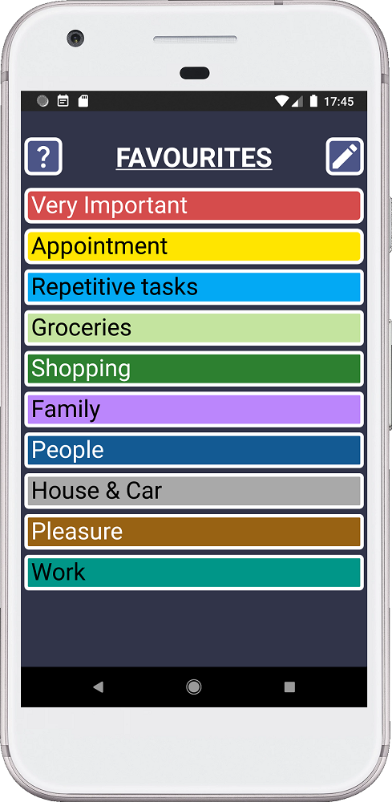
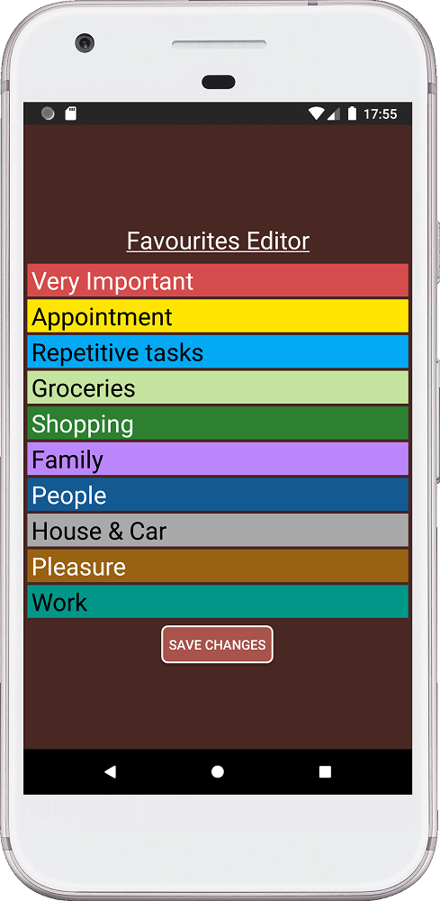
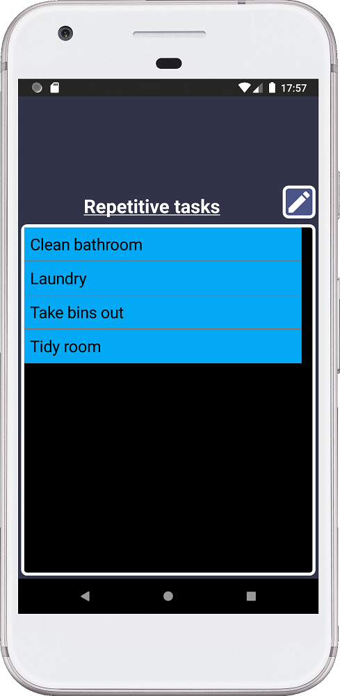
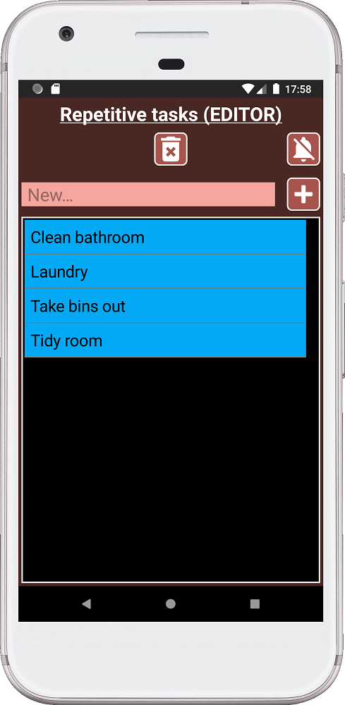

Less typing and more tapping! With this idea in mind, I created a menu that you can customize to your liking. Why? Because everyone life is different, everyone will benefit from a menu that you can adapt to your needs. Also, a good tool must be easy to use. No one want to waste time typing, when you can predefine things and select them from a menu.
Basically, you have a menu with 10 categories. Every category opens a different list.
You can change the name of each category. In addition, you can also change what is inside of each list.
Once you make changes to your menus they will be included in the backup data, so when working on making your menu better you are not wasting time.
Why does SECURElogBook have a dedicated menu system? Because SECURElogBook is a little bit more than a Todo list. It is a tool to help you to: memorise things, track things, personal diary, reminders, and more.
The menu is there, on one hand, to make things faster as you will tap instead of writing. On the other hand, you will decide how to name everything. That means that you can label your data in advance to make searching and grouping data to draw conclusions from it easier. And yes, SECURElogBook is also a tool to look into your data to learn from it.

This is an example of how to pre-label your data to make things easier to track. Labelling with "WATER" will help to find everything related to water. In the future, if I want to know how much water I have drunk, I can do a search for "water". You can apply this idea to other categories if you want.
Another benefit of having a list is that it will save you time as you will not need to guess. For example, with shopping groceries. If you take your time to put all you buy in a list. Your list will be long or short but it will not be infinite. You can use two or more menu categories to split items in different categories if you have many items. The point, is that when thinking on creating the shopping list, you can waste time guessing or you can look to your list and it will trigger what you need to buy.
1. Open SECURElogBook and go to the main window, with blue background:

2. Press the button (I) or tap on a record on the list (F).
3. Press the button (G) to access to the Favourite menu.

4. Press the button with the question mark to access the help.
5. Press the button with the pencil icon to edit the names of the categories.

6. Press “SAVE CHANGES” to commit the changes.
7. Press the back button on your phone to go back.
8. Press on “Repetitive tasks” category. This will open the list of “Repetitive tasks”:

9. We can select any text of the list and it will be used as the text for the record. For example, if you select “Laundry” the program will go back to the record menu and it will place “Laundry” as text for our record.
10. If you want to add/edit the list you can press the button with the pencil icon:

This window will allow you to add records by pressing the button with the plus icon.
You can swipe left a record to delete it.
You can delete all records if you press the bin button.
The list will be sorted alphabetically.
Remember the more time you spend improving your menus, the more time you will save.